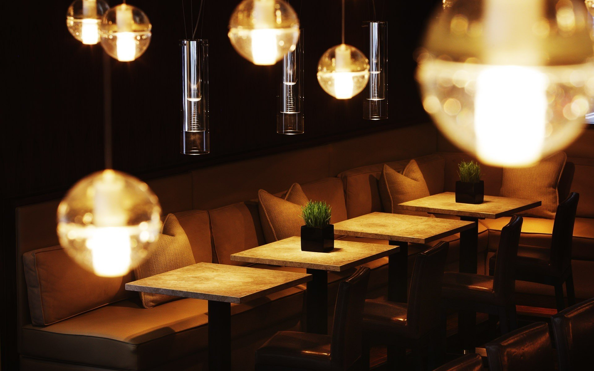
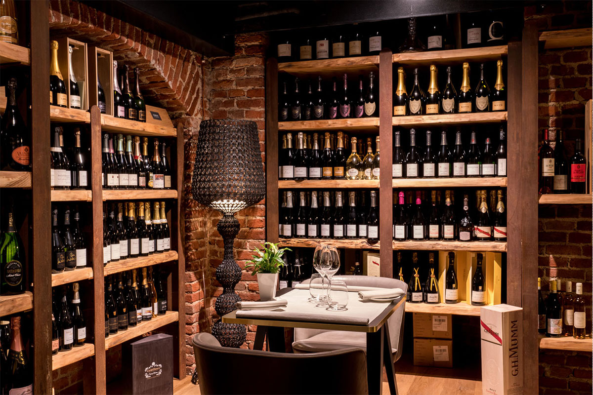
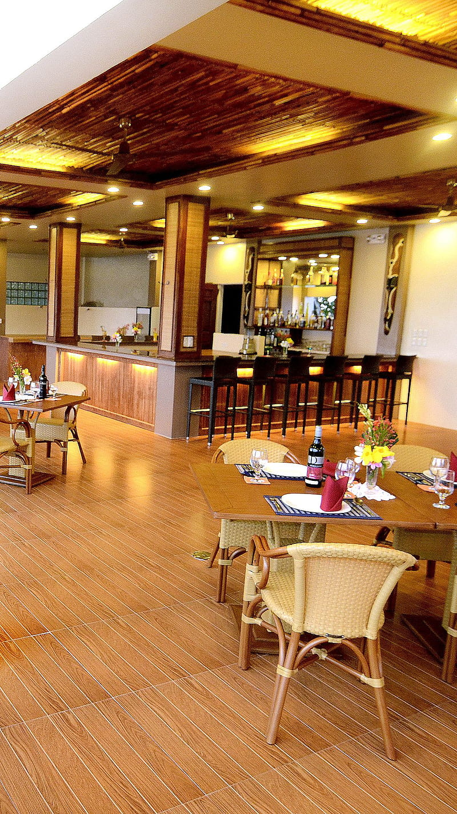

Giulia'S
Cafè Giulia
Il Café Giulia, al piano terra della
Galleria Antonio Ciamarra II, tra pareti dipinte a mano e mosaici che
si ispirano all’architettura esterna, è il luogo che ti darà per primo
il benvenuto.
Gustati la tua colazione comodamente seduto con vista Galleria,
oppure fatti coccolare al nostro bancone scegliendo quello che preferisci
tra brioches, piccola pasticceria o una colorata monoporzione, tutto
esclusivamente preparato nel laboratorio al piano superiore.
Nel dehor del Caffè Giulia potrai concederti uno sfizioso aperitivo,
oppure rilassarti, godendoti un pranzo o una cena informali con un menù
gastronomico semplice ma completo.

Ristorante Giulia
Una boiserie grigio azzurra introduce
alle tre sale e ai due privé del Ristorante al primo piano, ambienti che
oggi ritrovano ed esprimono tutto il loro valore nascosto. Il menù propone
portate inaspettate, come zuppa di pesce in crosta e tuorlo d’uovo marinato
con asparagi verdi e tartufo nero, ma anche piatti della tradizione, come il
riso mantecato alla zafferano, midollo alla piastra e ragù di fegatini.

Cantina
Una cantina ricca e particolarmente attraente, allestita al piano inferiore dentro vetrine in legno d’abete circondate da pareti rosso lacca: un’esposizione con più di duemila etichette e diecimila bottiglie, dedicata sia alla vendita che alla degustazione, con una selezione di vini principalmente italiani e francesi, per molti ancora inedita.

Galleria Giulia
Il progetto Galleria Giulia coinvolge alcuni
tra i più quotati artisti italiani e contemporanei nella realizzazione
di interventi site specific, dedicati alle lunette che sovrastano le
vetrate dell’ammezzato della Galleria,
con tre vetrine d’arte fruibili 24 ore su 24.
